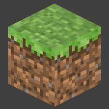
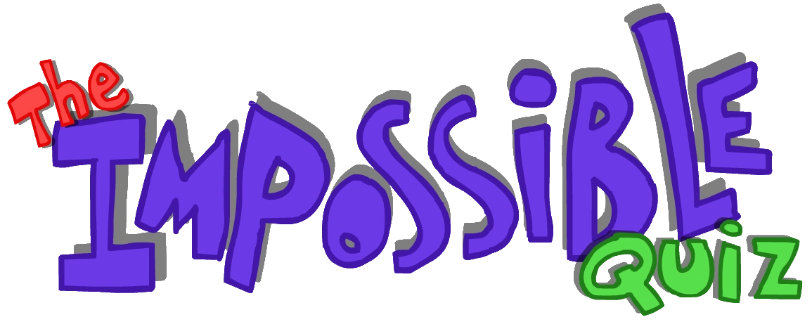
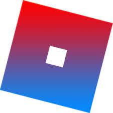

Minecraft

Minecraft is a 3D sandbox game that has no required goals to accomplish, allowing players a large amount of freedom in choosing how to play the game. However, there is an achievement system, known as "advancements" in the Java Edition of the game, and "trophies" on the PlayStation ports. Gameplay is in the first-person perspective by default, but players have the option of a third-person perspective. The game world is composed of rough 3D objects—mainly cubes and fluids, and commonly called "blocks"—representing various materials, such as dirt, stone, ores, tree trunks, water, and lava. The core gameplay revolves around picking up and placing these objects. These blocks are arranged in a 3D grid, while players can move freely around the world. Players can "mine" blocks and then place them elsewhere, enabling them to build things. Many commentators have described the game's physics system as unrealistic. The game also contains a material called redstone, which can be used to make primitive mechanical devices, electrical circuits, and logic gates, allowing for the construction of many complex systems.
The Impossible Quiz

The game is usually presented as a game of questions and answers, though in reality, there's always more than meets the eye. Most of the time, the player will be presented with a question or task, followed by four clickable options, one of which is the correct one. It isn't as easy as it sounds though: many of the questions rely on double meanings, tricks and puns, requiring the player to always "think outside the box", as Splapp has always said; besides, the player will find many surprises along the way, such as mini-games or mazes, where they will need to have some good skills and reflexes, and there's always the questions where the player will have to resort to plain insane logic.
The rules are simple: you're given three lives, and you'll lose one with every mistake you make. Losing all lives will cause a Game Over. You must beat all 110 questions of the game in a single take, no checkpoints in-between. Along the way, you will receive Skips, which are green arrow-shaped Power-ups that let the player skip particular questions of the game, though they are technically useless in this game, since the player has to save them all in order to beat the final question of the game, Question 110. Also, look out for bombs on certain questions. Bombs have a timer on them ranging from 1 to 11 seconds, and if the player doesn't answer the question they're in before the time runs out, they get an immediate Game Over.
Roblox

Roblox is an online game platform and game creation system developed by Roblox Corporation that allows users to program games and play games created by other users.There Are Over 40 Million Games! There are over 40 million games on Roblox. Every one of them built in a design program called Roblox Studio. One of the most popular games is called Natural Disasters! Roblox used to be called Dynabricks.